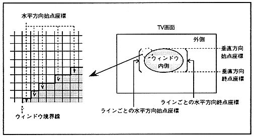
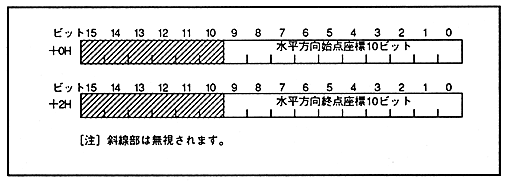

The normal line window is obtained by storing the horizontal start point and end point coordinates for each window line in the VRAM as a table and specifying the vertical start point and end point coordinates in the window position register. The area enclosed by the specified coordinates is inside, and the other area is outside. The window border is considered inside. The normal line window is shown in Figure 8.2.
∙ The bit configuration of the data stored in the horizontal start point and end point coordinate table (line window table) is shown in Figure 8.3.
∙ Coordinates can be specified for each line in non-interlaced and double-dense interlaced modes, but only for every 2 lines in single-dense interlaced mode. The configuration of the normal line window table is shown in Figure 8.4.
∙ If the start point coordinate is larger than the end point coordinate in either the horizontal direction or the vertical direction, the entire screen will be judged as the area outside the window.
Figure 8.2 Normal line window

Figure 8.3 Bit configuration of normal line window table data
